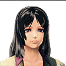

Your very first wave of Affinity Missions lets you recruit five new companions right away so they can start banking exploration Battle Points alongside Cross.
Prerequisites. Complete Chapter 3
- Complete the task エクステンション." (Tip: Install a data probe northeast of 原初の荒野's サイラム湖 第112区FNスポット).)
- Complete the task リサーチ・チャレンジ." (Tip: Gain 3000 credits from
 フロンティアネット.)
フロンティアネット.) - Complete the task ミラニウム・ファイト." (Tip: Give 900 units of ミラニウム to タウラー.)
- Talk to H.B. on the ブレイドコンコース.
- Head to Noctilum's Rust Lake to rescue the BLADEs. (Tip: H.B. (HB) joins the team at this objective.)
- Defeat a Thieving Dilus at 夜光の森's 赤錆湖水.
- Talk to ソラン at Noctilum's Rust Lake.
Rewards. Recruits  HB
HB
ヴァンダム · ブレイドホーム · Lv. 12+ · 1 Heart with エルマ
Prerequisites. Leave out  イリーナ・アクロフ,
イリーナ・アクロフ,  グイン, or
グイン, or  ダグラス
ダグラス
- Collect three parts of the 白鯨 at ノースモウストの浜 in 原初の荒野. (Tip: All 3 of the 白鯨のパーツ are Mechanical Level 1 field skills.)
- Find the source of the distress call in Primordia's North ジャンパス湖の北平原.
- Defeat the Intimidator Simius found in Primordia's North Janpath Plain.
- Search for イリーナ・アクロフ on the North Janpath Plain in Primordia.
- Report back to ヴァンダム at the BLADE barracks.
Rewards.  シャドーストライク for
シャドーストライク for  デュアルソード
デュアルソード
リン · ブレイドホーム · Lv. 13+ · 1 Heart with リン
Prerequisites. Complete Chapter 3
- Talk to Bart at ニューロサンゼルス's West ウエストゲート.
- Gather three L-002 power L-002電力ケーブル in 原初の荒野's 流星の谷.
- Talk to Bart at NLA's west gate. (Tip: If the player Grumbles, this mission ends here with Route A.
- If they Persist the mission will continue and Route B will be achieved.)
- [Route B] Use フロンティアネット to gather five white Cometites.
- [Route B] Gather two energy Tubes from ベルデs in Primordia. (Tip: Any Puge can drop this.
- Treasure Sensor can increase the chance that it drops.)
- [Route B] Gather four cruise deflector 航行デフレクターAiR in 忘却の渓谷. (Tip: These are typically found in the area around the ジャイアントクラック and トルホグネ平原 in Oblivia.)
- [Route B] Talk to Bart at NLA's west gate.
Rewards.  ファイアカーニバル for
ファイアカーニバル for  ガトリングガン
ガトリングガン
Prerequisites. Complete Chapter 3
- Complete Mission 押し付けられた任務A. (Tip: Gather three リザッティスs in 原初の荒野)
- Complete Mission 押し付けられた任務B. (Tip: Defeat two ユース・ヴァサルトs in Primordia)
- Complete Mission 押し付けられた任務C. (Tip: Defeat five メタル・ブラッタs in Primordia)
- Talk to
 イエルヴ on North ノース第1ストリート in the commercial 商業エリア.
イエルヴ on North ノース第1ストリート in the commercial 商業エリア. - Head to the ブレイドコンコース with Yelv. (Tip: Yelv joins the team at this step.)
- Head to 忘却の渓谷's North ノースコースト and retrieve the debris.
- Defeat three Hermit Insidias at Oblivia's North Coast.
- Investigate the White Whale debris at Oblivia's North Coast.
- Talk to エレオノーラ at the BLADE Concourse in the administrative ブレイドエリア. (Tip: This involves handing over a 生体サンプル to Eleonora.)
Rewards. Recruits イエルヴ
Prerequisites. Leave out イリーナ・アクロフ
- Defeat four Matinal Evellos in 原初の荒野's 嘆き平原.
- A nearby BLADE team is under attack.
- Head to Primordia's Grieving Plains.
- Defeat the Brume Auravis in Primordia's Grieving Plains.
Rewards.  ラウンドリカバリー for
ラウンドリカバリー for  ナイフ
ナイフ
ヒメリ・アランジ · 住宅エリア · Lv. 21+
Prerequisites. Basic Mission active: 結婚してくれ！！
- Talk to ルリリタ at 黒鋼の大陸's ドロンゴ・キャラバン.
- Defeat five Mold Caro at the スコールズ古戦場跡.
- Talk to Lularita at Cauldros's Drongo Caravan.
- Report to オルネラ in the residential 住宅エリア.
Rewards. Recruits 
ヒメリ・アランジ